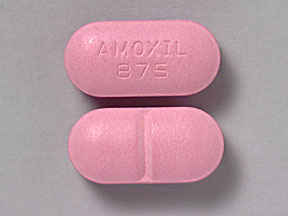
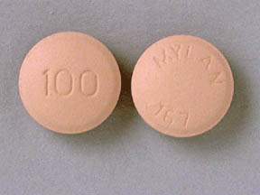
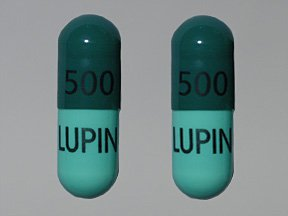
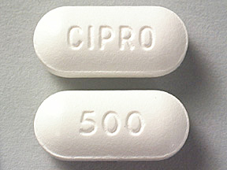
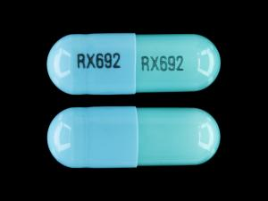

PharmMed
A Healthcare personalized for YOU
A Healthcare personalized for YOU
Need to get your medicine?
Top 5 Most Common Antibotic for Infections
What are antibiotics?
Antibiotics are used to tame infections that are caused by bacteria. With over 100 types of antibiotics, we compiled a list of 10 of the most common antibiotics to help you make you match:
| Name of Antibotic | Common Brand Names: | How Does It Look Like? | What Does It Treat? How To Use? | Cautions |
|---|---|---|---|---|
| Amoxicillin | Amoxil, Moxatag |  | Fights tonsillitis, bronchitis, pneumonia, gonorrhea, and infections of the ear, nose, throat, skin, or urinary tract | Can cause diarrhea Can make birth control pills less effective |
| Doxycycline | Acticlate, Adoxa CK, Adoxa Pak |  | Treats acne,rosacea, urinary tract infections, intestinal infections, respiratory infections,and eye infections | Children younger than 8 years old should not use, only when case is life-threatening Use during pregnancy can harm unborn baby and cause permanent tooth discoloration |
| Cephalexin | Daxbia, Keflex |  | Treats upper respiratory infections, ear infections, skin infections, urinary tract infections and bone infections | Do no take if you are allergic to cephalexin or to similar antibiotics, such as Ceftin, Cefzil, Omnicef, and others Do not take if you have |
| Ciprofloxacin | Cipro, Cipro XR, Proquin XR |  | Treats different types of bacterial infections, including skin infections, bone and joint infections, respiratory or sinus infections, urinary tract infections, and certain types of diarrhea. It is also used to treat gonorrhea./td> | Only should use when safer antibiotics do not work Can cause serious nerve problems |
| Clindamycin | Cleocin HCl, Cleocin Pediatric |  | Treats serious infections caused by bacteria | Can cause diarrhea, which may be severe or lead to serious, life-threatening intestinal problems If you have a history of asthma, eczema, or allergic skin reaction |
Top 5 Most Common Medicine for Allergy
Top 5 Most Common Pain Medication
Have you ever had trouble identifying the drugs and ointments perscribed to you? Well, fret not! Simplytake a picture of the medicine and upload it and wait for the magic to happen!